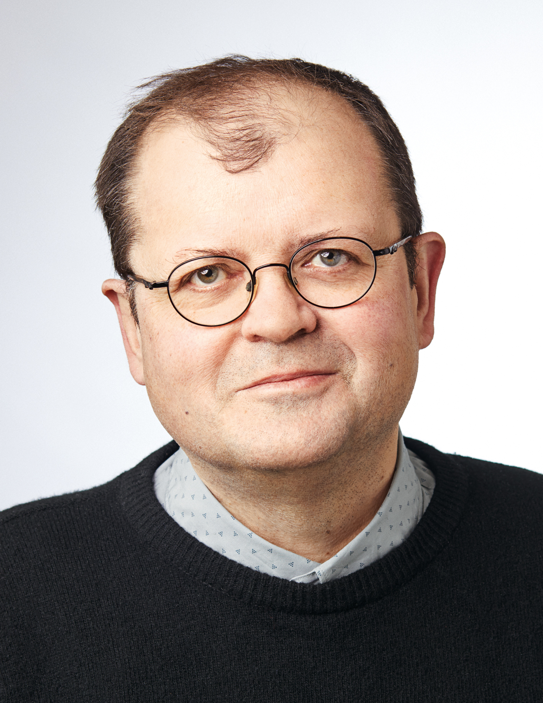

Professor Valery Grinevich, MD PhD
Full Professor, Heidelberg University
Head of Department of Neuropeptide Research in Psychiatry, Central Institute of Mental Health (CIMH/ZI), Mannheim
Head, International Joint Laboratory for Translational Research on Neuromodulation, Shenzhen Institute of Advanced Technology (SIAT) of the Chinese Academy of Sciences
The Oxytocin Subsystems in the Mammalian Brain: From Axons to Sociality
Valery Grinevich obtained his MD degree in 1992 from Kursk State Medical University (USSR/Russia), specializing in neurology and psychiatry.
Bio
Valery Grinevich obtained his MD degree in 1992 from Kursk State Medical University (USSR/Russia), specializing in neurology and psychiatry. In 1996, he defended his PhD thesis on the evolutionary and comparative neuroanatomy of the oxytocin and vasopressin systems in vertebrates at the Russian Academy of Sciences in Saint Petersburg. As a recipient of the Russian President Boris Yeltsin Award, he completed postdoctoral training with Profs. Fernand Labrie and George Pelletier in Quebec, studying hypothalamic mechanisms of the stress response, and later joined Greti Aguilera’s team at the NIH to investigate neuro-immuno-endocrine interactions. In 2001, as an Alexander von Humboldt Fellow, Valery joined Prof. Gustav Jirikowski’s group in Jena to study pathological alterations in human hypothalamic neurons. Although appointed Full Professor at Moscow State Medical University in 2003, he declined the position to pursue postdoctoral research with Prof. Peter H. Seeburg at the Max Planck Institute for Medical Research in Heidelberg, where he learned methods of molecular neurobiology and developed cell-type-specific viral tagging of hypothalamic neurons. Valery established his own research group there in 2008. In 2012, he became the Leader of the Independent Neuropeptides Group at the German Cancer Research Center (DKFZ) and the Heidelberg University. Since 2019, he has been Full Professor (W3) at the Heidelberg University and Head of the Department of Neuropeptide Research in Psychiatry at the Central Institute of Mental Health (CIMH/ZI) in Mannheim. Since 2025 Valery heads the International Joint Laboratory for Translational Research on Neuromodulation of the Shenzhen Institute of Advanced Technology (SIAT) of the Chinese Academy of Sciences. Valery has published a number of seminal papers and has received several awards and grants, including an ERC Synergy Grant, which he currently coordinates.